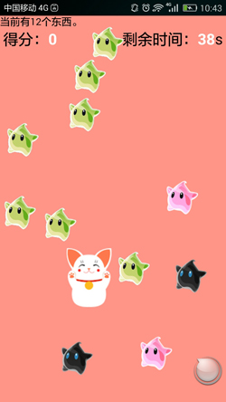
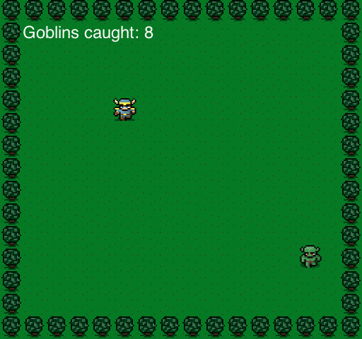

When I try to import canvas to Catch Star, I found I am not proficient in it.
So I go to imooc.com to learn how to use canvas. Canvas is easy, but you must to proficient in it if you
want to make some cool and perfect animation.
The below is a calculagraph make by canvas, is it cool? You can also learn how to make it in HRER.
It took me three days to finish this game. We can call it Catch Star for a while being.
I coded Small Battle City and Gluttonous Snake and other, but Catch Star is the first game that I have
motivation to finish it.
Just because the game can be play by the girl I like. It is wonderful!
I hadn`t import canvas of html5, but I think it will make it more easy to code, so I will import this
new funny technique.
You can see Catch Star below:

If you think this game is funny, and don't mind it is simple and out of season, you can download by CLICK HERE!
And you can also download by scan the two-dimension code below:
2015/08/24
I think I must to study how to code a blog by myself.
2015/08/22
This is my first canvas game.
In the feature, I can code game with canvas instead of original javascript.

Click here to play!